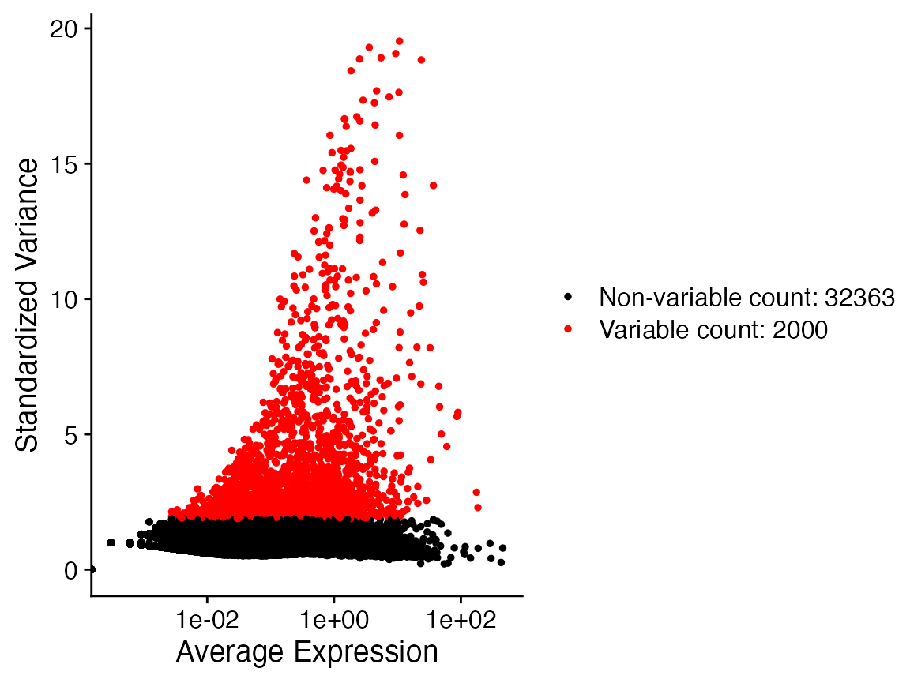

Pancreatic_Integration_2_Batches.Rmd
library(Canek)
#> Registered S3 method overwritten by 'spdep':
#> method from
#> plot.mst ape
library(Seurat)
library(SeuratData)
#> Registered S3 method overwritten by 'cli':
#> method from
#> print.boxx spatstatIn this example we integrate only two batches (celseq and celseq2). See the vignette “Batch Effect Correction on Pancreatic Cells (multiple batches)” for an example of multiple batches integration.
InstallData("panc8")
#> Installing package into '/Users/runner/work/_temp/Library'
#> (as 'lib' is unspecified)
x <- SplitObject(panc8, split.by = "tech")
x <- x[c("celseq", "celseq2")]
x <- merge(x[["celseq"]], x[["celseq2"]])
x <- NormalizeData(x)
x <- FindVariableFeatures(x)
VariableFeaturePlot(x)
#> Warning: Transformation introduced infinite values in continuous x-axis
table(x$tech)
#>
#> celseq celseq2
#> 1004 2285
x <- ScaleData(x)
#> Centering and scaling data matrix
x <- RunPCA(x)
#> PC_ 1
#> Positive: SCG3, SYT7, ERO1LB, ABCC8, GAD2, VGF, MIR7-3HG, PLCXD3, KIF5C, MLXIPL
#> G6PC2, STX1A, STMN2, PEG10, CFC1, RASD1, RGS4, SCD, SYT13, PRUNE2
#> SORL1, PCSK1, FAM105A, MEIS2, CRYBA2, LOC100216479, UCHL1, GC, FEV, SUSD4
#> Negative: IFITM3, ZFP36L1, COL4A2, S100A11, AHNAK, CLIC4, PMEPA1, FSTL1, REST, SERPINH1
#> SOX4, LAMC1, MSN, NOTCH2, COL4A1, PHLDA1, ANXA2, EPS8, FLNA, HK1
#> MICAL2, LITAF, CAV2, LGALS3, IFITM2, TPM1, PPP1R18, TUBB6, PXDN, MYOF
#> PC_ 2
#> Positive: SPARC, COL5A2, COL5A1, COL1A2, COL6A3, COL6A2, COL5A3, PDGFRB, COL15A1, MRC2
#> COL3A1, NID1, FBN1, COL1A1, SFRP2, LUM, LOXL2, CDH11, LAMA4, CYGB
#> THBS2, LTBP2, BGN, PRRX1, WNT5A, LHFP, EDNRA, ITGA1, ITGA11, DKK3
#> Negative: TACSTD2, KRT18, KRT8, SERPINA3, ANXA4, TM4SF1, CFB, SDC4, CLDN4, PDZK1IP1
#> KRT7, TMC5, MUC1, LCN2, GATM, SAT1, TC2N, IL32, BACE2, AKR1C3
#> SOD2, SERINC2, ABCC3, CLDN1, MUC20, CD44, LAD1, SPINK1, TMPRSS2, NR5A2
#> PC_ 3
#> Positive: KCNQ1OT1, PGM5P2, ARRDC3-AS1, LOC100131257, UGDH-AS1, LOC642236, HYDIN2, TMEM212, KDM4A-AS1, ESRG
#> LOC643406, POLH, LOC440300, LOC100130954, EMX2OS, GSG1, GATM-AS1, VSTM4, OLAH, TNFAIP8L1
#> LPAL2, ARHGEF26-AS1, GPR82, SYNPO2L, PCDH11Y, LOC90834, GNRHR2, ANKRD20A9P, ODF2L, L2HGDH
#> Negative: SEL1L3, LGR4, RASEF, OCLN, TACSTD2, ATP10B, GDF15, CFB, CD44, SH3BP4
#> BACE2, MTUS1, TC2N, NR5A2, ABCC3, GSTA2, CLDN1, SOD2, NFIB, GULP1
#> GSTA1, TMPRSS2, B3GNT7, KLK1, SPTBN1, CYB5A, KCNQ1, CEL, IQGAP2, TPM1
#> PC_ 4
#> Positive: CFTR, ONECUT2, DCDC2, AQP1, VTCN1, ALDH1A3, SPP1, KRT19, IGFBP7, DEFB1
#> SLC4A4, SERPING1, TINAGL1, MMP7, SERPINA5, PPARGC1A, PMEPA1, PDGFD, ANXA3, TFPI2
#> HSD17B2, SCNN1A, AKAP7, KRT23, APCDD1, CTSH, PROM1, TSPAN8, CEACAM7, KRT80
#> Negative: CPA2, PLA2G1B, CPA1, PRSS3P2, CTRC, PNLIP, CTRB2, PRSS1, CEL, CTRB1
#> KLK1, GSTA2, CPB1, PRSS3, REG1B, CELA2A, BCAT1, CELA3A, ALB, SPINK1
#> PNLIPRP2, PNLIPRP1, AOX1, FAM129A, ALDOB, CELA3B, GSTA1, REG1A, CTRL, C15orf48
#> PC_ 5
#> Positive: PECAM1, ESAM, SOX18, KDR, CD93, ACVRL1, ELTD1, GPR4, PLVAP, FLT1
#> MYCT1, EXOC3L2, ABI3, NOTCH4, EMCN, ERG, CALCRL, ECSCR, S1PR1, PTPRB
#> GIMAP4, RGCC, TIE1, RHOJ, COL13A1, MMRN2, GIMAP8, CLEC14A, PODXL, CDH5
#> Negative: COL5A1, SFRP2, COL6A3, THBS2, NOTCH3, COL3A1, LTBP2, LUM, PDGFRB, CDH11
#> COL5A3, COL5A2, COL6A1, ITGA11, PRRX1, LAMA2, FN1, TNFAIP6, COL1A2, COL1A1
#> COL12A1, GFPT2, WNT5A, COL6A2, SPON2, FMOD, CRLF1, ANTXR1, CYGB, LAMC3
x <- RunUMAP(x, reduction = "pca", dims = 1:30)
#> Warning: The default method for RunUMAP has changed from calling Python UMAP via reticulate to the R-native UWOT using the cosine metric
#> To use Python UMAP via reticulate, set umap.method to 'umap-learn' and metric to 'correlation'
#> This message will be shown once per session
#> 06:44:22 UMAP embedding parameters a = 0.9922 b = 1.112
#> 06:44:22 Read 3289 rows and found 30 numeric columns
#> 06:44:22 Using Annoy for neighbor search, n_neighbors = 30
#> 06:44:22 Building Annoy index with metric = cosine, n_trees = 50
#> 0% 10 20 30 40 50 60 70 80 90 100%
#> [----|----|----|----|----|----|----|----|----|----|
#> **************************************************|
#> 06:44:22 Writing NN index file to temp file /var/folders/24/8k48jl6d249_n_qfxwsl6xvm0000gn/T//RtmpWTPavL/fileab51dd144fd
#> 06:44:22 Searching Annoy index using 1 thread, search_k = 3000
#> 06:44:23 Annoy recall = 100%
#> 06:44:23 Commencing smooth kNN distance calibration using 1 thread
#> 06:44:25 Initializing from normalized Laplacian + noise
#> 06:44:25 Commencing optimization for 500 epochs, with 134188 positive edges
#> 06:44:29 Optimization finishedWe pass the column containing the batch information.
x <- RunCanek(x, "tech")
x <- ScaleData(x)
#> Centering and scaling data matrix
x <- FindVariableFeatures(x)
#> Warning in eval(predvars, data, env): NaNs produced
#> Warning in hvf.info$variance.expected[not.const] <- 10^fit$fitted: number of
#> items to replace is not a multiple of replacement length
VariableFeaturePlot(x)
#> Warning in self$trans$transform(x): NaNs produced
#> Warning: Transformation introduced infinite values in continuous x-axis
#> Warning: Removed 2 rows containing missing values (geom_point).
x <- RunPCA(x)
#> PC_ 1
#> Positive: IFITM3, ZFP36L1, REST, S100A11, CLIC4, SOX4, AHNAK, MICAL2, CAV2, PMEPA1
#> ANXA2, LAMC1, NOTCH2, CD44, EPS8, SH3BP4, COL4A2, IFITM2, LGALS3, PHLDA1
#> TPM1, LITAF, NFIB, SERPINH1, SPTBN1, ANXA2P2, MYOF, SAT1, TFPI, MSN
#> Negative: SCG3, SYT7, ERO1LB, ABCC8, GAD2, VGF, MIR7-3HG, PLCXD3, KIF5C, G6PC2
#> STX1A, MLXIPL, PEG10, STMN2, CFC1, RGS4, SCD, RASD1, SYT13, PRUNE2
#> SORL1, UCHL1, MEIS2, PCSK1, FAM105A, LOC100216479, GC, CRYBA2, FEV, SUSD4
#> PC_ 2
#> Positive: SPARC, COL5A1, COL5A2, COL1A2, COL6A3, PDGFRB, COL6A2, COL5A3, COL15A1, MRC2
#> COL3A1, NID1, FBN1, CDH11, LAMA4, LUM, SFRP2, LOXL2, BGN, LTBP2
#> THBS2, CYGB, PRRX1, WNT5A, LHFP, COL1A1, COL4A1, IGFBP4, EDNRA, COL6A1
#> Negative: TACSTD2, SERPINA3, CFB, KRT8, ANXA4, TMC5, KRT18, TM4SF1, SDC4, KRT7
#> TC2N, CLDN4, OCLN, RASEF, GATM, PDZK1IP1, ABCC3, MUC1, BACE2, SOD2
#> IL32, NR5A2, CLDN1, AKR1C3, LAD1, ATP10B, CPM, SAT1, CLMN, SLC16A7
#> PC_ 3
#> Positive: ATP10B, LGR4, GSTA2, SERF2-C15ORF63, TC2N, CD44, GDF15, NR5A2, KLK1, TACSTD2
#> CFB, GSTA1, CEL, B3GNT7, OCLN, BCAT1, CYB5A, PLA2G1B, XBP1, SH3BP4
#> BACE2, MTUS1, IL32, TMPRSS2, GATA4, AKR1C3, ALDOB, TMEM97, TPST2, TPM1
#> Negative: KCNQ1OT1, PGM5P2, UGDH-AS1, ARRDC3-AS1, LOC100131257, LOC643406, MAB21L3, LOC642236, TMEM212, HYDIN2
#> KDM4A-AS1, GATM-AS1, POLH, ESRG, LOC440300, GSG1, EMX2OS, LOC100130954, OLAH, LPAL2
#> ARHGEF26-AS1, ANKRD20A9P, GPR82, TNFAIP8L1, SYNPO2L, ODF2L, LOC90834, GNRHR2, VSTM4, L2HGDH
#> PC_ 4
#> Positive: CFTR, ONECUT2, DCDC2, ALDH1A3, AQP1, VTCN1, SPP1, KRT19, SLC4A4, IGFBP7
#> DEFB1, SERPING1, TINAGL1, MMP7, ANXA3, SERPINA5, TFPI2, SCNN1A, BICC1, PMEPA1
#> PPARGC1A, PDGFD, HSD17B2, NDRG2, AKAP7, KRT23, CTSH, PKHD1, APCDD1, TSPAN8
#> Negative: CPA2, PRSS1, PRSS3P2, PLA2G1B, CPA1, CTRC, PNLIP, CTRB2, KLK1, CTRB1
#> CEL, PRSS3, BCAT1, GSTA2, CPB1, CELA2A, REG1B, CELA3A, PNLIPRP2, SPINK1
#> AOX1, ALB, PNLIPRP1, FAM129A, CBS, ALDOB, REG1A, GSTA1, CELA3B, CTRL
#> PC_ 5
#> Positive: COL5A1, SFRP2, COL6A3, THBS2, NOTCH3, COL3A1, COL1A1, LTBP2, LUM, CDH11
#> PDGFRB, COL5A3, COL5A2, ITGA11, COL6A1, PRRX1, LAMA2, TNFAIP6, FN1, COL1A2
#> COL12A1, COL6A2, GFPT2, WNT5A, SPON2, FMOD, ANTXR1, CRLF1, CYGB, LAMC3
#> Negative: PECAM1, ESAM, SOX18, KDR, CD93, ACVRL1, ELTD1, GPR4, PLVAP, FLT1
#> MYCT1, EXOC3L2, ABI3, NOTCH4, EMCN, ERG, CALCRL, ECSCR, S1PR1, PTPRB
#> GIMAP4, RGCC, TIE1, RHOJ, COL13A1, GIMAP8, MMRN2, CLEC14A, PODXL, CDH5
x <- RunUMAP(x, reduction = "pca", dims = 1:30)
#> 06:44:46 UMAP embedding parameters a = 0.9922 b = 1.112
#> 06:44:46 Read 3289 rows and found 30 numeric columns
#> 06:44:46 Using Annoy for neighbor search, n_neighbors = 30
#> 06:44:46 Building Annoy index with metric = cosine, n_trees = 50
#> 0% 10 20 30 40 50 60 70 80 90 100%
#> [----|----|----|----|----|----|----|----|----|----|
#> **************************************************|
#> 06:44:47 Writing NN index file to temp file /var/folders/24/8k48jl6d249_n_qfxwsl6xvm0000gn/T//RtmpWTPavL/fileab550b2b785
#> 06:44:47 Searching Annoy index using 1 thread, search_k = 3000
#> 06:44:47 Annoy recall = 100%
#> 06:44:48 Commencing smooth kNN distance calibration using 1 thread
#> 06:44:49 Initializing from normalized Laplacian + noise
#> 06:44:49 Commencing optimization for 500 epochs, with 136788 positive edges
#> 06:44:54 Optimization finished